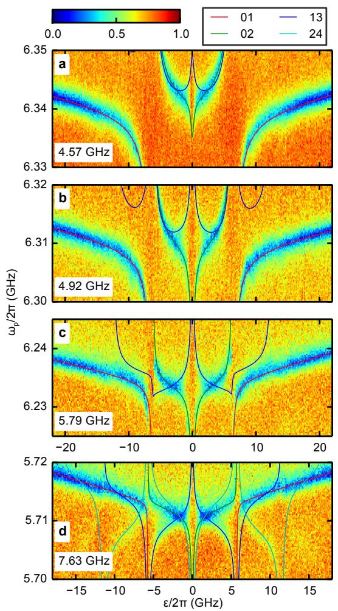
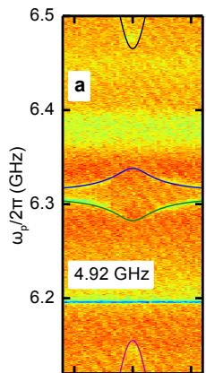
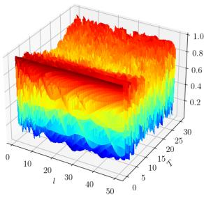
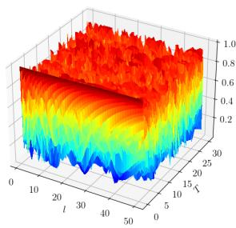
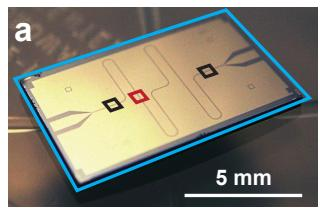
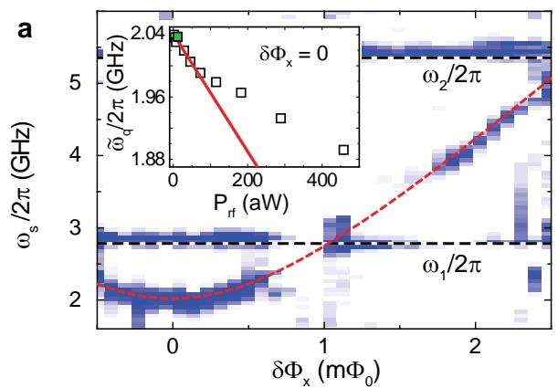

物理图像
在电路量子电动力学（circuit quantum electrodynamics，cQED）中，“原子”由人工二能级——超导电路或半导体量子点——扮演，“腔”由微波谐振腔扮演。“看到相互作用”是平庸的：只要比特与腔之间存在任何不为零的耦合 ，透射或反射谱就会出现弯曲、频移、展宽。但要让相干交换成为可分辨的量子动力学，就必须让激发在丢失之前能在两个子系统之间往返若干次。
这意味着耦合速率 必须能与两类非相干过程竞争——腔光子向外的耗散（速率 ）与比特自身的退相干（速率 ）。当
时，相干交换就在损耗之前完成多次——系统进入强耦合区（strong coupling regime）。这一判据既适用于Jaynes–Cummings 模型描述的二能级–单模耦合，也适用于多模、多比特共享腔的场景；半导体量子点 cQED 的强耦合演示全部围绕它展开。
从 Rabi 振荡到合作因子
时域与频域的两种刻画
强耦合的两个等价刻画是：
- 时域：若系统初态制备为 ，则激发在比特与腔模之间相干往返的速率为 ——这就是真空 Rabi 振荡。振荡能在 的耗散包络下完成 个周期。
- 频域：将比特频率扫过腔频，原本应在 处”交叉”的两条谱线会拉开为间距 的两条杂化支——这就是真空 Rabi 劈裂。两条支的线宽等于腔耗散与比特退相干之和的一半 ，劈裂能谱可分辨的条件是
半导体量子点的能谱通常以频域方式测量，因此文献中常把 视为”劈裂可分辨”的工作判据。
合作因子
为量化”相干 vs 非相干”的相对权重，引入合作因子（cooperativity）
或常见等价的双倍写法 、——三种归一仅差一个常数因子，物理含义一致：相干耦合相对于腔耗散与比特退相干的几何平均。 表明系统进入”相干耦合占优”的工作区，但能否在谱上分辨还要看线宽定义、失谐、温度占据与拟合模型。
半导体 cQED 文献中， 常被作为单一数字横向对比不同器件（材料、比特类型、腔型）下的相干优劣——见下文的实验进展表。
模型哈密顿量与耦合速率
JC 哈密顿量与有效耦合
旋波近似（rotating-wave approximation，RWA）下，单比特–单模的耦合由 Jaynes–Cummings 哈密顿量描述（参见JC 模型词条）。对双量子点电荷比特，相互作用项的微观推导给出全局耦合强度（overall coupling strength，或 bare coupling strength）
其中 是左量子点的杠杆臂（lever arm）， 是腔的特征阻抗， 是电阻量子。有效耦合
其中 是双量子点的混合角， 是点间隧穿耦合， 是失谐。当 （最大混合）时 ， 取得最大值 ；当 时电子局域在单个点内，，耦合消失。
高阶模的耦合为
即随腔模频率升高而增大；实际实验常工作于基模。
透射响应与参数提取
通过输入–输出理论，透射式共面波导腔的透射系数为
其中 是量子点的磁化系数， 是比特–探测失谐， 是比特的总退相干速率（ 弛豫、 纯退相位）。反射式腔的 形式类似，仅分子替换为 。
把 （或 ）的极点拆为实部与虚部，比特对腔的影响可写为
色散极限（）下实部主导，频移 与二阶微扰一致；近共振时虚部主导，腔线被比特”打开”额外耗散通道——这是从频谱判断工作区的判据之一。
强耦合的实现路径
提高耦合强度
半导体量子点的电偶极矩可达 量级，远大于单原子；与之匹配的高阻抗腔（参见高阻抗谐振腔词条）把每个光子的零点电压涨落放大 倍，使 。两条成熟的工程路线：
- SQUID 阵列腔：约瑟夫森结的非线性电感把特征阻抗推到 ，并保留磁通原位可调腔频的优势；
- 高动态电感材料腔：NbTiN、TiN、NbN 等超导薄膜的动能电感使 达到 ，并因 高、临界场大而适合自旋比特实验。
历史地看，强耦合在半导体 cQED 中是伴随高阻抗腔实现的：2017 年 Wallraff 组用 SQUID 阵列腔把 GaAs 双量子点的 从约 6.7 MHz 提升到 119 MHz，首次演示门控量子点的强耦合；2018 年 Vandersypen 组用 NbTiN 腔在 Si 上把电荷比特推到 MHz。
抑制损耗 与
- 腔侧：TiN 纳米线腔的 已压到约 2.2 MHz；NbTiN 反射腔约 11 MHz；SQUID 阵列腔因结参数不均匀与氧化层损耗较高，约 MHz；
- 比特侧：自旋比特的电偶极矩小、与电荷噪声解耦， 可低至 MHz；电荷比特虽然 大但 多在 MHz 量级。强耦合的达成往往需要在电荷混合与退相干之间选择最优工作点——这是、、三本论文反复讨论的实验经验。
论文中总结的判据为
即自旋–光子耦合同时超过腔耗散与自旋退相干； 论文给出的共振区有效总耗散为
参数与量级
实验进展横向对比
下表汇总 与 论文表 1.2/1.1 所列近年半导体量子点–腔杂化系统的关键参数（电荷比特为主，自旋与共振交换比特单列； 为合作因子，按原文定义）。
| 单位 | 年份 | 材料 | 比特类型 | 腔材料 | (MHz) | (MHz) | (MHz) | |
|---|---|---|---|---|---|---|---|---|
| Petta 组 | 2017 | Si | 电荷 | Nb | 6.7 | 2.6 | 1.0 | 17.3 |
| Wallraff 组 | 2017 | GaAs | 电荷 | SQUID | 119 | 40 | 12.3 | 28.8 |
| Vandersypen 组 | 2018 | Si | 电荷 | NbTiN | 200 | 52 | bare 2.7 | 142.5 |
| Vandersypen 组 | 2018 | Si | 自旋 | NbTiN | 13 | 2.5 | dispersive 5.4 | 12.5 |
| Petta 组 | 2018 | Si | 电荷 | Nb | 40 | 35 | bare 1.3 | 25.4 |
| Petta 组 | 2018 | Si | 自旋 | Nb | 5.5 | 2.4 | dispersive 1.8 | 7.0 |
| Wallraff 组 | 2018 | GaAs | 共振交换自旋 | NbTiN | 31.4 | 19.6 | 47.1 | 1.1 |
| Wallraff 组 | 2018 | GaAs | 两电荷比特 | SQUID | 53 | 4.8 | 33 | 17.7 |
| Wallraff 组 | 2020 | GaAs | 电四极矩 | SQUID | 150 | 32 | 18 | 39.1 |
| Petta 组 | 2020 | Si | 两自旋比特 | Nb | 10.7 | 4.7 | 2.0 | 12.2 |
| 郭国平组 | 2021 | GaAs | 两电荷比特 | SQUID | 80 | 55 | 35.0 | 3.3 |
| 郭国平组 | 2021 | GaAs | 电荷 | NbTiN | 104.5 | 72 | 35.3 | 4.3 |
注：表中”bare”与”dispersive”分别指裸腔线宽（无耦合比特时的 ）与色散读出条件下提取的线宽。
本仓库论文中的强耦合实现
| 比特类型 | 体系 | 来源 | ||||
|---|---|---|---|---|---|---|
| 电荷比特 | GaAs DQDs + NbTiN 高阻抗反射腔 | 74 MHz（DQD1）、119 MHz（DQD2） | 视比特而异 | 11 MHz 量级 | — | |
| 电荷比特 | GaAs DQD + SQUID 阵列反射腔（ GHz， kΩ） | 57 MHz | — | 58.9 MHz | — | |
| 电荷比特 | Si/SiGe RDQD + TiN 纳米线腔（ kΩ， GHz） | 175 MHz | — | 2.2 MHz | — | |
| 翻转模式自旋比特 | Si/SiGe 三量子点（RDQD/LDQD） + TiN 腔 | 21.8 MHz / 13.8 MHz | — | — | — | |
| 自旋–光子耦合 | Si/SiGe DQD + TiN 腔 | 43.5 MHz（，真空 Rabi 劈裂） | — | 2.2 MHz | — | |
| 共振交换比特 | Si/SiGe 三量子点 + TiN 腔 | MHz， MHz | 16.9 MHz | — |
实验证据与边界
直接证据
- 频域：观测到间距 的真空 Rabi 劈裂，线宽近似 。这是最常用的强耦合指纹。
- 时域：探测真空 Rabi 振荡，即激发在 与 之间以 的速率往返若干次。需要时间分辨的探测（如脉冲序列、time-tagged 测量），比频域更直接但对测量带宽要求更高。
必须排除的”假象”
仅有一条弯曲谱线或单纯的腔频移不足以证明强耦合：
- 经典耦合：驱动功率过高时，经典 Rabi 模型也能预言弯曲谱，弯曲形状与真空 Rabi 劈裂相似；
- 功率展宽：高功率下腔线本身的非线性展宽也能拉出”双峰”假象；
- 多能级效应：量子点的更高激发态（轨道、谷、电荷）若同时参与跃迁，会产生与真空 Rabi 劈裂混淆的多峰结构；
- Fano 干涉：高阻抗腔的细中心导体与寄生通道耦合常导致谱线不对称，未做 Fano 修正的拟合会把 系统性低估。
可靠的判断需要同时拟合频率、线宽、功率依赖，并确认工作点与目标量子点的调参一致。论文即强调”劈裂大小等于 ，免交点处两条谱线的展宽等于 ；真空 Rabi 劈裂是半导体双量子点与腔强耦合的直接证据”。
强弱耦合区的物理差异
| 区 | 判据 | 光谱特征 | 时间行为 |
|---|---|---|---|
| 弱耦合 | 一条被比特展宽/频移的腔线，无可分辨双峰 | 指数衰减，无相干振荡 | |
| 强耦合 | （等价 ） | 两条杂化支，间距 ，线宽 | 真空 Rabi 振荡，周期 |
| 超强耦合 | 双峰仍可见，但谱线对失谐不再对称 | 反旋项显著，JC 模型失效，需回到 Rabi 模型 |
在半导体 cQED 中，超强耦合尚未稳定演示。论文记录了 Wallraff 组利用约瑟夫森结阵列达到的 ，是首次进入超强耦合区的工作；该区下 JC 模型失效，反旋项贡献不可忽略，真空会出现虚光子云，是 cQED 仍待探索的物理前沿。
深强耦合区（）是这条阶梯的下一级：耦合强度与振子频率同量级时，连 Rabi 模型的微扰图像也需重新审视——能谱出现由简并点（Juddian points）组织的绝热结构，跃迁服从新的选择定则。Yoshihara 等人用磁通比特与 LC 振子的电感耦合实现 （超深强耦合），在透射谱中直接分辨出绝热能级与对称点附近的选择定则变化——“深强耦合能否在真实物理系统实现”的争论由此给出实验定论。阶梯之外还有正交的一级：超强耦合（superstrong，判据 ，自发辐射线宽超过多模真空的自由谱区）——单原子同时杂化多个真空模、反向修改真空态密度，见超强耦合词条。

深强耦合电路的透射谱：两个电路（不同耦合强度）的计算跃迁频率与实测谱—— 以上能谱组织成绝热分支，Juddian 简并点处的避免交叉清晰可见。图源：Yoshihara et al. (2017)，Fig. 2。

对称点附近的选择定则与透射谱：深强耦合区的跃迁强度重新分布——传统 JC 选择定则失效后，哪些跃迁可见由绝热能级的对称性决定。图源：Yoshihara et al. (2017)，Fig. 3。
模拟路线与直接实现并列：量子 Rabi 模型在深强耦合区的物理也可以用 cQED 芯片模拟——设计等效哈密顿量映射，用可调耦合架构在芯片上重现深强耦合区的能谱与动力学特征，而不必让真实器件承受 的苛刻条件。模拟路线的灵活性（参数可调、体系可选）让它成为深强耦合物理的补充研究工具。

量子 Rabi 模型深强耦合区的芯片模拟：等效哈密顿量映射与器件设计——模拟路线的参数灵活性。图源：arXiv:2402.06958，Fig. 1。

深强耦合区的模拟结果：能谱与动力学特征——与直接实现的实验数据交叉验证。图源：arXiv:2402.06958，Fig. 2。
超强耦合区的系统物理
词条的耦合阶梯表已列超强耦合行；这一区的系统物理值得展开：JC 模型失效后回到量子 Rabi 模型——A² 项（规范不变性要求的双线性项）不可忽略，它确保能谱有下界；真空不动点（基态光子数为有限值——真空本身被杂化）；虚光子云的可探测签名。综述（Kockum 系）把这一区的实验与理论系统对接。

超强耦合区 cQED 的物理图景：Rabi 模型、A² 项、真空不动点——JC 失效后的完整框架。图源：Kockum et al. 综述 (2014)，Fig. 1。

超强耦合的实验版图：各平台的耦合强度对比——从微波到光学。图源：Kockum et al. 综述 (2014)，Fig. 2。
与其他概念的关系
-
深强耦合的原始实验全文见 Wallraff 2004 同批 cQED 奠基文献与本词条引用的 Yoshihara et al. (2017)。
-
与JC 模型：强耦合是 JC 模型在共振极限下的物理后果；JC 模型给出强耦合所需的 、真空 Rabi 劈裂 、色散极限下频移 。
-
与真空 Rabi 劈裂：劈裂是强耦合最常用的频域证据；判据 要求谱线可分辨。
-
与高阻抗腔：提高 是增大 （从而 ）的硬件路径；半导体 cQED 中的强耦合演示几乎全部依赖高阻抗腔。
-
与电荷–光子耦合：双量子点电荷比特的耦合 由杠杆臂、混合角、腔阻抗共同决定。
-
与自旋–光子耦合：自旋比特本身磁偶极矩小（直接耦合 Hz 量级），需经微磁体梯度场或自旋轨道机制引入电荷混合，把 推到与 同量级；典型半导体 cQED 自旋强耦合中 MHz。
-
与腔介导远程耦合：进入强耦合区后，多个比特可共享同一腔模并通过腔光子交换激发，构成远程纠缠与两比特门的硬件基础。
-
与Floquet 动力学：强周期驱动下，JC 模型需推广到 Floquet 描述；强耦合区是观测腔光子辅助 LZSM 干涉等非平衡现象的必要条件。
设计经验：寻找强耦合工作点
、、三本论文在不同的腔型与材料体系中总结出寻找强耦合工作点的若干经验（综合 PDF pp. 43–45, pp. 57–58, pp. 60–62）：
- 优先选取响应强的点间隧穿线：谐振腔扫描电荷稳定图时，那些幅值/相位响应强的隧穿线一般对应较高的 ；
- 避开源漏隧穿线：源漏电子库隧穿会缩短电荷比特的相干时间， 急剧增大；
- 关注隧穿线的连续性：源漏耦合过弱的隧穿线常出现”断断续续”，需增大偏置电极电压以保证电子可及时补充；
- 耦合强度依赖电子空间分布：电荷填充数相近的两个比特有相近的 ；多电子比特因电偶极矩更大通常 更大；
- 回避杂点：蜂窝图中存在第二套隧穿线往往预示器件内有意外的量子点，会污染主比特的频率与耦合；
- 调节 接近 ：当隧穿速率 与腔频 重合时 接近 1，可直接提取全局耦合强度 。